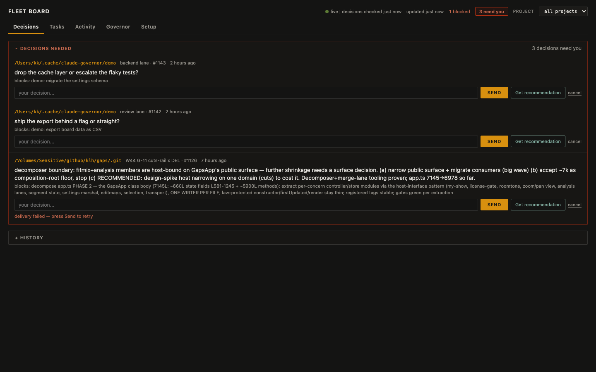

Five parallel Claude Code sessions. A usage cliff freezes three mid-edit. The survivors keep claiming scopes; nobody notices for six hours. Suspenders is the control plane that notices — and the board where you decide what happens next.

Decision forks surface as red cards. Advice me! has an LLM analyze the fork in control-plane context; you edit or send. Lanes, completion stats, and the event stream stay live at 1s.
NEED_DECISION
instead of blocking silently
ANSWER. The LLM advises; the human decides.
secrets-gate before every Bash call · file-lease governor on edits · capability-aware dispatch · plan-gated fan-out · zombie detection that never equates a lookup failure with death · auto-reclaim? never — the human decides
sequenceDiagram
autonumber
participant L as Lane (worker session)
participant C as Coordinator session
participant G as governor.db (bus + graph)
participant B as Fleet board (browser)
participant A as advise.ts (LLM worker)
participant H as Human operator
Note over L,G: work and checkpoints ride the bus — never prose
L->>G: work take W7 (CAS claim, capability-checked)
L->>G: emit checkpoint --sha (milestone)
L->>G: emit NEED_DECISION (fork raised)
G->>B: 1s poll — fork card (red, asker, age)
B->>H: "2 forks need you"
alt human wants machine advice
H->>B: click "Advice me!"
B->>A: POST /api/advise (spawn, detached)
A->>G: read claims, recent events, graph shape
A->>A: LLM call (OpenAI-compatible, autodiscovered)
A->>G: fact advice.#id + ADVICE event
G->>B: advice inline (rec / rationale / risk / model)
B->>H: "use this" fills the answer box
end
H->>B: edit decision, send
B->>G: emit ANSWER --to lane (auto-acks the fork)
G->>L: lane inbox sees ANSWER on next poll
Note over L,C: consults — questions, never ownership
L->>G: coord who-knows "retry contracts?"
G->>C: consult C## in expert inbox
C->>G: coord consult-reply C## answer
G->>L: answer lands in lane inbox
Note over G,H: zombies — 2 stale signals alert, never auto-reclaim
G->>B: zombie chip (lane frozen by usage cliff)
H->>G: work reclaim W4 — re-dispatch at frozen transcript
Rendered with mermaid — the same diagram lives in the README. The invariants: the bus is the transport, consults never move ownership, and the human is the only one who answers forks or reclaims lanes.
bun CLIs + hook gates │ SessionStart → bootstrap session, caps, transcript_path │ PreToolUse → secrets / edit-enforce / governor lease ▼ governor.db (SQLite/WAL) — sessions · claims · work graph · events · facts ▲ 1s poll (WAL = concurrent readers) fleet board — forks · lanes · tasks · stream ← you, deciding
Belt and suspenders: the harness trusts the graph, verifies with two independent liveness signals, and never lets one failure mode be fatal. The Work Graph is authoritative; everything else — prose, transcripts, memory — is reconstruction.